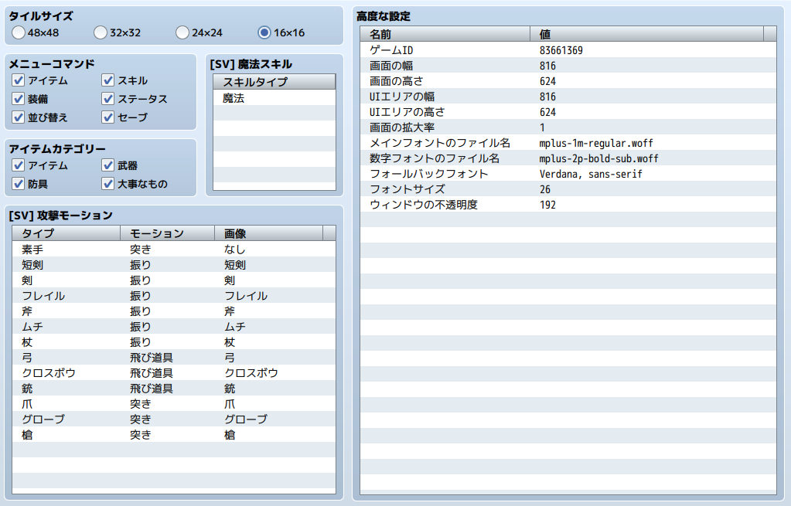

RPG TKOOL MZ HELP
データベース

システム2の設定
データの役割
システム2のデータは、カスタマイズの設定をまとめたものです。
設定項目の内容

タイルサイズ
マップを構成する各タイルの縦横サイズを変更します。標準のタイルセット素材は48×48規格ですが、そのほかの規格の画像素材を別途ご用意いただくことで、MZのデフォルトとは異なる見た目のゲームを制作することができます。
タイルサイズの規格は[素材規格]を参照ください。
メニューコマンド
メニュー画面にあるコマンドのON/OFFを切り替えます。
アイテムカテゴリー
アイテム画面にあるカテゴリーのON/OFFを切り替えます。
［SV］攻撃モーション
サイドビューモードで通常攻撃時に表示されるモーションを選択します。
［SV］魔法スキル
サイドビューモードで詠唱モーションが必要なスキルタイプのリストです。
高度な設定
その他、高度なシステム設定を行います。
-
ゲームID
ゲームIDを変更することができます。
-
画面の幅・画面の高さ
ゲーム画面の幅と高さを設定します。
-
UIエリアの幅・UIエリア高さ
UIエリアの幅と高さを設定します。
-
画面の拡大率
ゲーム実行時の画面の拡大率を変更します。1～4の整数が入力可能です。
-
メインフォントのファイル名
フォントを設定します。
-
数字フォントのファイル名
数字を表示するフォントを設定します。
-
フォールバックフォント
メインフォントに入っていない文字を表示するフォントを設定します。
-
フォントサイズ
文字の大きさを設定します。
-
ウィンドウの不透明度
ゲーム中に使用するウィンドウの不透明度を設定します。